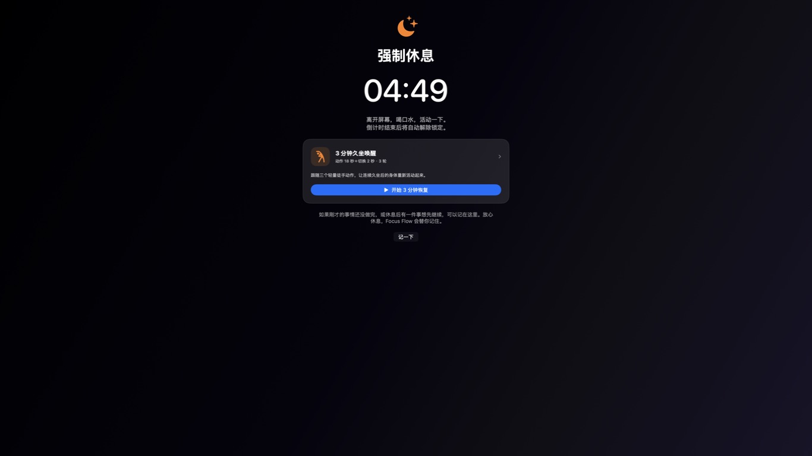
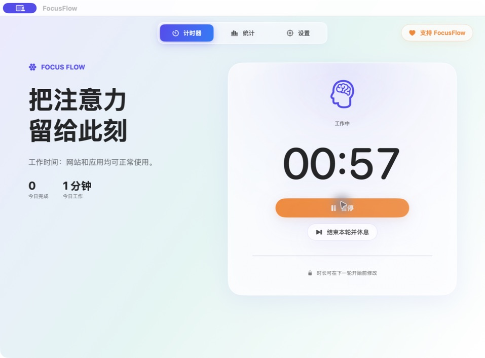
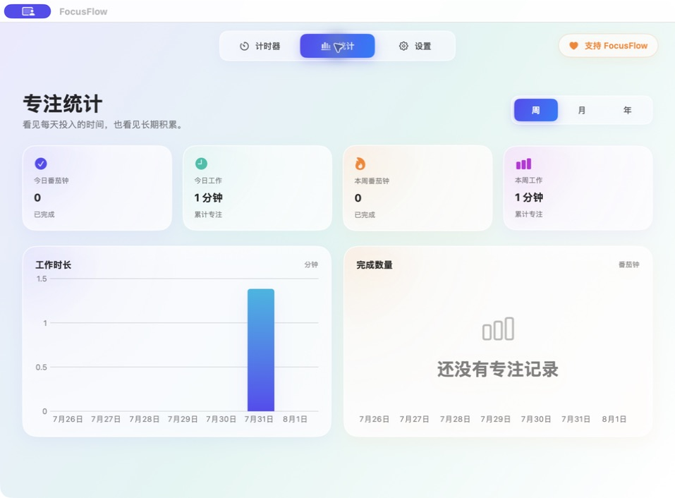
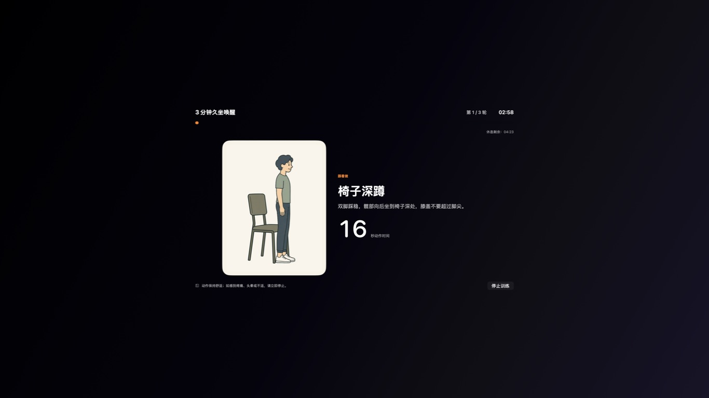
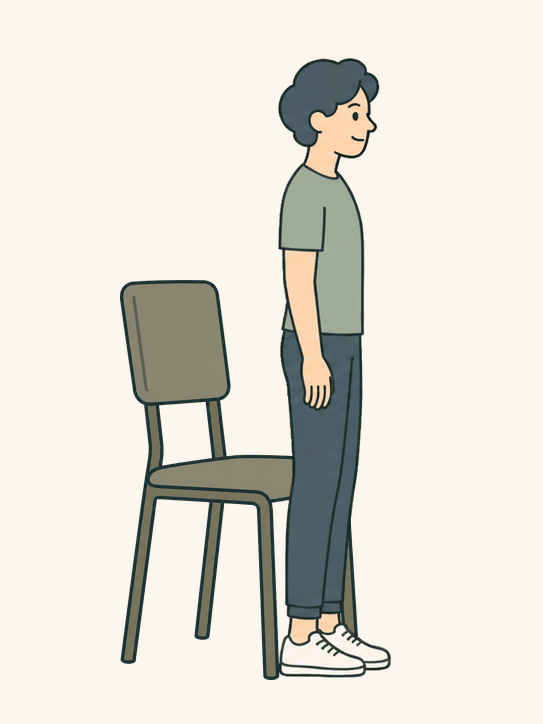
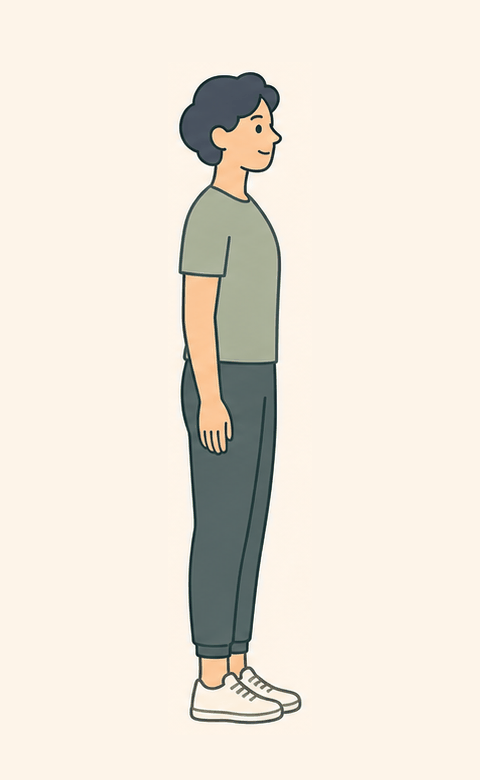
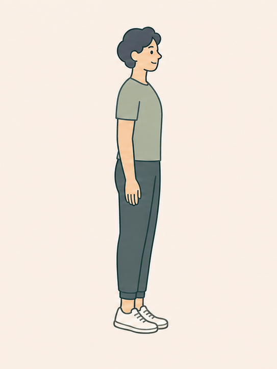

01到点了，就让眼睛和大脑
↗
到点了，就让眼睛和大脑
真的下班几分钟。
休息开始后，FocusFlow 会覆盖所有显示器，并隐藏 Dock 与菜单栏。倒计时结束前不能切换应用、暂停、跳过或退出——因为恢复精力，不该只停留在提醒里。
- ✓ 每一块显示器都进入休息模式
- ✓ 倒计时结束后自动回到工作

真实的全屏休息画面想做事时，它安静计时；该休息时，它认真请你离开屏幕。
守住每一轮专注，也守住不被跳过的恢复时间。

计时器不该成为另一块需要盯住的屏幕
休息开始后，FocusFlow 会覆盖所有显示器，并隐藏 Dock 与菜单栏。倒计时结束前不能切换应用、暂停、跳过或退出——因为恢复精力，不该只停留在提醒里。

真实的全屏休息画面
真实的专注统计画面专注时长与完成轮数会自动记录。按周、月、年回看趋势，既能看见今天做了多少，也能看见时间如何慢慢变成成果。
休息前点一下“记一下”，把当前思路留在原地。倒计时结束后，FocusFlow 会提醒你刚才做到哪里，短暂离开也不用重新回忆上下文。
休息至少还剩 3 分钟时，可以跟着三个轻量徒手动作活动身体。每个动作 18 秒，换动作 2 秒，三轮刚好 180 秒。相近的晚间活动方案在随机交叉研究中，与更长的当晚睡眠时间相关。




研究中的动作、时长与 FocusFlow 高度吻合：椅子深蹲、提踵、站姿抬膝，每个动作 20 秒、三轮，共 3 分钟。与晚间持续久坐相比，规律进行活动中断的参与者当晚睡得更久。
28 名健康成人的随机交叉试验中，晚间每 30 分钟进行 3 分钟徒手活动，相比持续久坐，当晚实际睡眠时间平均增加 27.7 分钟。
查看研究 · BMJ Open Sport & Exercise Medicine ↗研究没有发现睡眠效率、入睡后的清醒时间或夜间醒来次数出现显著变差，也没有改变随后 24–48 小时的活动模式。
阅读开放获取全文 ↗同一实验方案的另一项分析显示，活动中断组的餐后血糖与胰岛素增量反应分别降低 31.5% 与 26.6%。
查看研究 · Medicine & Science in Sports & Exercise ↗以上为一次包含 28 名健康成人的短期实验结果，提示潜在效果，但尚不能证明长期因果关系。FocusFlow 不是医疗工具，实际效果会因使用时间、频率与个人状态而异。
免费下载，无需注册。你的统计与设置，只留在这台 Mac 上。
免费下载 FocusFlowv1.1.0 · 适用于 macOS 14+